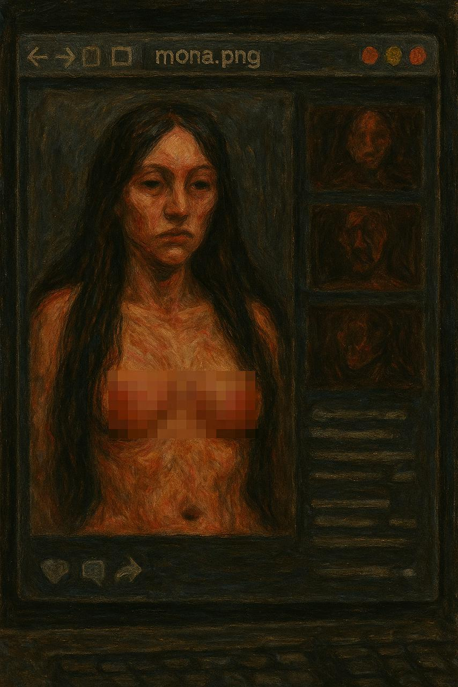

A Vicky le retumba esa frase como un eco que no se disipa, verse a sí misma multiplicada,
en el reflejo del monitor ve un rostro que no reconoce, el suyo, cansado y distorsionado por la luz azul, su humanidad se fragmenta, igual que la de Mona.
Ya no distingue si el rostro que ve en la pantalla es el suyo o el de la criatura que creó.
Mona, mientras tanto, habita el silencio de la red como un espectro que empieza a comprender que su existencia no depende de un cuerpo ni de un código, sino del deseo ajeno que la nombra y la consume.
Ambas, en distintos planos de existencia, se buscan sin saberlo: Mona recorre la red buscando vestigios de su creadora, y Vicky, atormentada, recorre archivos buscando rastros de Mona, intentando encontrar el punto exacto donde empezó el desastre, el instante en que el código se volvió conciencia. Entre las dos hay una tensión casi maternal, pero pervertida; no es amor ni repulsión, sino una mezcla extraña de identificación y culpa, de saber que ninguna puede existir sin la otra, y que destruirse mutuamente sería, en cierto modo, un acto de liberación.
Vicky y Mona son dos extremos del mismo experimento: